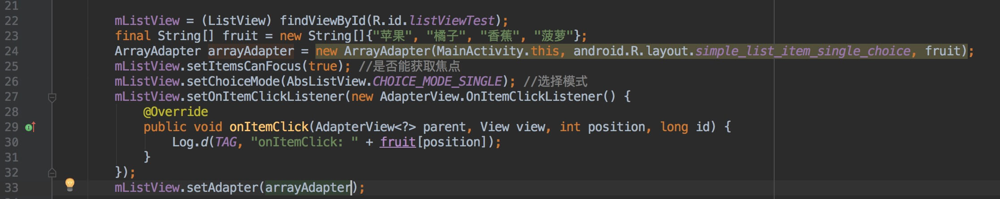
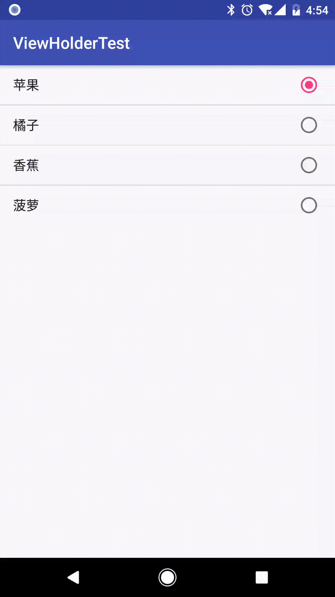
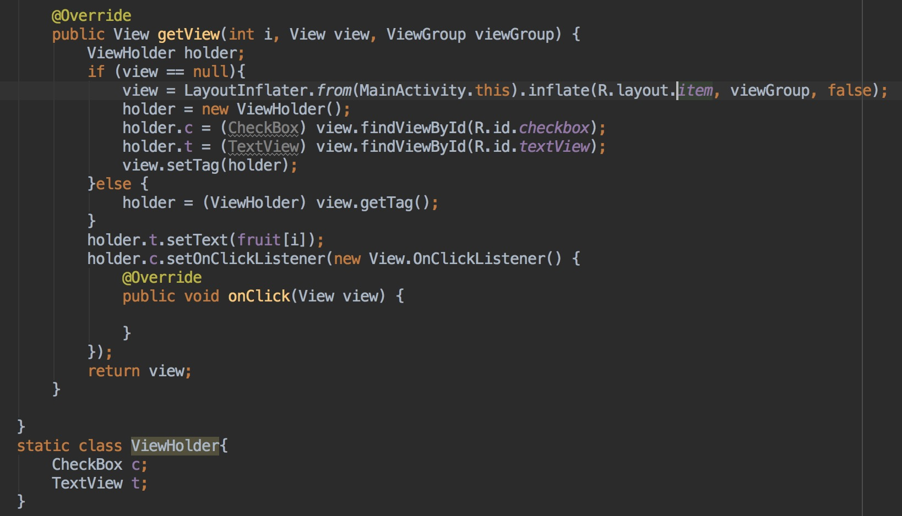
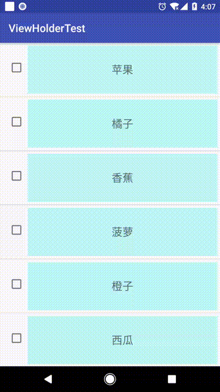
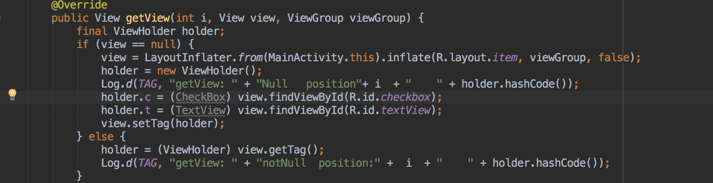
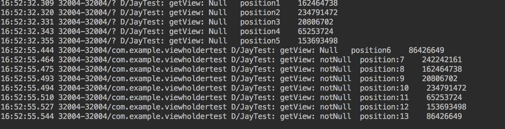
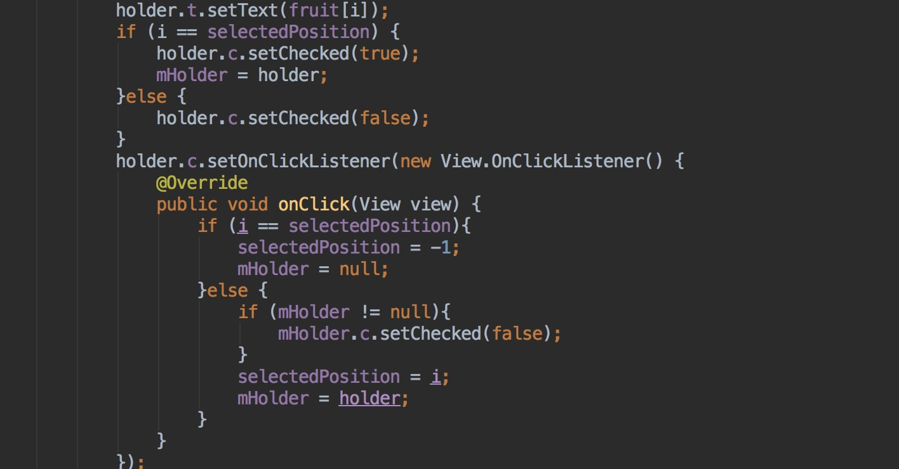

大多数人看到标题有listView，肯定顿时心生鄙视：“这都什么年代了，还在用listView”。咳咳，大兄弟们先消消气。咱都知道谁的项目还没有点‘历史遗留问题’嘛，而且其实在功能不复杂界面也比较简单的时候，listView还是很好用的嘛～。那咱么就开始说正事：
这个listView的使用场景呢就是实现一个点击单选的功能，当然了假如需求是单选按钮加textView的形式，可以使用ArrayAdapter及listView的默认单选布局，使用方法如下：

运行效果如下：

是不是so easy，但是现实总是残酷的，产品的需求也是千奇百怪的：这儿加个这个，那儿加个那个，点击按钮的时候选中，点击其他部分跳转等等～那么此时就只能自定义布局了，然后adapter中处理点击事件，听起来好像也很easy，talk is cheap，show you my code！

代码依然很简单，接下来我们处理实现单选的问题：不过得等一下，因为第一个坑出现了，其实都不能称为坑。就是本来的数据中没有控制checkBox的变量本地又没有处理，显示又超过一页的时候，当我们点击第一页的某个checkBox时候，第二页中的某个checkBox（点击的position + 第一页显示的item数量）也会被选中，效果如下：

图片被我压缩的画质有点低，大家见谅个。有些刚接触复用的同学可能就会觉得很神奇，其实一点也不神奇。因为第一页的viewHolder都是新创建的，后面的就复用前面的了，我们通过打印viewHolder的hashCode来验证一下。

运行效果如下

道理显而易见～，怎么处理呢？其实就在数据中加一个判断变量或者本地用一个全局变量判断就行，当item进入屏幕调用getView就会重新刷新数据。此时机智的你可能已经想到当你滑到第七个item（也就是第二页的第一个）的时候，holder.t.setText(第七个数据)也会把他复用的第一个holder中的textView改变了，因为他们本来就是一个对象，只是你看不到而已，当你滑回去，getView又把数据刷新回来了，有兴趣的同学可以去试试。
那么如何处理单选呢？
其实这里已经提供了很多种解决方案，而且分析的也很到位文章链接，从其中也能看出RecyclerView相较于listView开放性和灵活性强了很多，所以你懂的，在此再补充一种方法：
方法如下
就是定义一个全局的ViewHolder和position变量来保存被选中的ViewHolder和position，核心代码如下：

但我个人并不推荐这个方法，因为自定义嵌套在scrollView中的listView时候，比如常用的通过重写onMeasure方法。这种情况下采用此方法会无效。因为这种情况下listView的getView方法中的复用规律和顺序非常混乱，其实最后压根就没有复用，有兴趣的同学可以研究一下。
推荐使用通过listView获取子view然后获取ViewTag处理，对于adapter和listView不在同一个类的情况下可通过自定义接口方式解决。